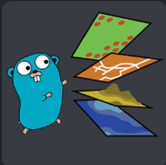
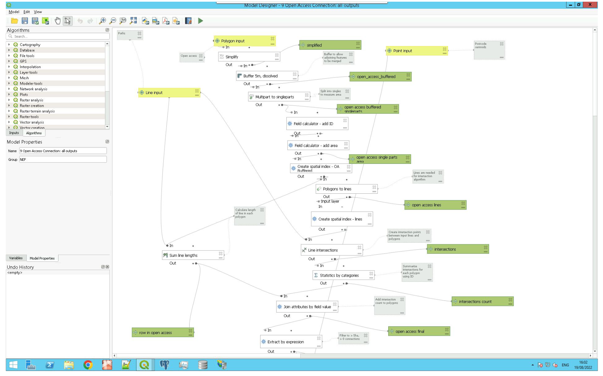

Inception
OR
A very brief introduction to Argo Workflows on Kubernetes
Hi!
I'm Illya
Senior Geospatial Data Engineer


How do we get all this rich data to the map...
- Elevation Data
- Winter and Summer Satellite Imagery
- Vector Map Data - roads, paths, pistes, lifts
- Routes, POIs
APIs
Data Pipelines
Introducing Argo Workflows

Argo Workflows: an open source container-native workflow engine for orchestrating parallel jobs on Kubernetes.
- Define workflows where each step in the workflow is a container
- Model multi-step workflows or capture dependencies between tasks using a directed acyclic graph (DAG)
- Flexible enough to use for a vast range of processing jobs
- Implemented as a Kubernetes CRD (Custom Resource Definition)
- Define workflows and templates as YAML or Python (Hera)
So what does a workflow look like in code?
apiVersion: argoproj.io/v1alpha1
kind: Workflow
metadata:
generateName: "TantalusRange-DigitalGlobe-50cm-08062011-w-"
spec:
securityContext:
runAsUser: 0
entrypoint: loop-rasters
arguments:
parameters:
- name: log-level
value: debug
- name: catalogue-dsn
value: "postgres://some-postgres-connection/catalogue"
- name: pipeline-bucket
value: "a-bucket-name"
- name: rasters
value: '[{"dataset-id":"TantalusRange-DigitalGlobe-50cm-08062011-w","raster-path":"s3://coremapdata/raw/imagery/fatmap/processed/8b/TantalusRange_08062011_Winter/tantalusrange_02_8b.tif"},{"dataset-id":"TantalusRange-DigitalGlobe-50cm-08062011-w","raster-path":"s3://coremapdata/raw/imagery/fatmap/processed/8b/TantalusRange_08062011_Winter/TantalusRange_01_final_8b.tif"}]'
templates:
- name: loop-rasters
parallelism: 50
inputs:
parameters:
- name: rasters
steps:
- - name: process-rasters
template: process-raster
arguments:
parameters:
- name: dataset-id
value: "{{item.dataset-id}}"
- name: raster-path
value: "{{item.raster-path}}"
withParam: "{{inputs.parameters.rasters}}" # parameter specifies the list to iterate over
- name: process-raster
retryStrategy:
limit: 5
inputs:
parameters:
- name: dataset-id
- name: raster-path
container:
image: some_fatmap_container_repo/raster-pipeline
imagePullPolicy: Always
env:
- name: PIPELINE_LOG_LEVEL
value: "{{workflow.parameters.log-level}}"
- name: PG_DSN
value: "{{workflow.parameters.catalogue-dsn}}"
- name: PIPELINE_BUCKET
value: "{{workflow.parameters.pipeline-bucket}}"
- name: AWS_ACCESS_KEY_ID
valueFrom:
secretKeyRef:
name: tiler-aws-credentials
key: access_key
- name: AWS_SECRET_ACCESS_KEY
valueFrom:
secretKeyRef:
name: tiler-aws-credentials
key: secret_access_key
# Retry every 1.5s for 15 minutes.
- name: GDAL_HTTP_MAX_RETRY
value: "600"
- name: GDAL_HTTP_RETRY_DELAY
value: "1.5"
- name: GDAL_HTTP_VERSION
value: "2" # We want multiplexing.
- name: DOCKER_HOST # The docker daemon can be access on the standard port on localhost.
value: 127.0.0.1:2375
command: ["cloud", "{{inputs.parameters.dataset-id}}", "{{inputs.parameters.raster-path}}"]
volumeMounts:
- name: docker-config
mountPath: "/root"
- name: workdir
mountPath: /data
resources:
limits:
cpu: "0.2"
memory: 500Mi
requests:
cpu: "0.1"
memory: 500Mi
sidecars:
- name: dind
image: docker:18.09-dind
securityContext:
privileged: true # the Docker daemon can only run in a privileged container
# mirrorVolumeMounts will mount the same volumes specified in the main container
# to the sidecar (including artifacts), at the same mountPaths. This enables
# dind daemon to (partially) see the same filesystem as the main container in
# order to use features such as docker volume binding.
mirrorVolumeMounts: true
resources:
limits:
cpu: "6"
memory: 8Gi
requests:
cpu: "3"
memory: 8Gi
volumes:
- name: docker-config
secret:
secretName: docker-registry-key
items:
- key: .dockerconfigjson
path: .dockercfg
mode: 0600
- name: workdir
emptyDir: {}
imagePullSecrets:
- name: docker-registry-key
tolerations:
- key: "tier"
operator: "Equal"
value: "batch"
effect: "NoSchedule"
affinity:
nodeAffinity:
requiredDuringSchedulingIgnoredDuringExecution:
nodeSelectorTerms:
- matchExpressions:
- key: tier
operator: In
values:
- batch
apiVersion: argoproj.io/v1alpha1
kind: Workflow
metadata:
name: osm-import-replicate
generateName: osm-download-import-replicate-
spec:
entrypoint: main-workflow
onExit: workflow-exit-handler
securityContext:
runAsUser: 0
volumes:
- name: workdir
persistentVolumeClaim:
claimName: osm-file-cache
arguments:
parameters:
- name: osm-url
value: https://planet/url/planet-latest.osm.pbf
- name: replication-server
value: https://replication/day/
- name: pbf-file
value: /data/osm_download/planet-latest.osm.pbf
- name: imposm-config
value: /import_configs/planet_config.json
- name: mapping-file
value: /import_mappings/poi_tiles_mapping.yml
templates:
# DAG
- name: main-workflow
dag:
tasks:
- name: download-osm-pbf-file
template: osm-tool-download
- name: update-osm-pbf-file
depends: download-osm-pbf-file
template: osm-tool-replicate
- name: create-postgis-extension
depends: update-osm-pbf-file
template: run-sql
arguments:
parameters:
- name: sql-file
value: /sql/init_db.sql
- name: imposm-read-osm-file-to-cache
depends: create-postgis-extension
template: imposm-import-read
- name: imposm-write-to-database
depends: imposm-read-osm-file-to-cache
template: imposm-import-write
# run post import processing
- name: post-process-import
depends: imposm-write-to-database
template: run-sql
arguments:
parameters:
- name: sql-file
value: /sql/post_import_poi_processing.sql
- name: post-process-optimize
depends: post-process-import
template: imposm-import-optimize
- name: deploy-poi-tables
depends: post-process-optimize
template: deploy-poi-tables
# create replication triggers in the DB
- name: create-replication-triggers
depends: deploy-poi-tables
template: run-sql
arguments:
parameters:
- name: sql-file
value: /sql/replication_triggers.sql
# start the replication
- name: start-osm-replication
depends: create-replication-triggers
template: osm-replicate
# workflow templates
- name: osm-tool-download
container:
image: download-pipeline
command: [bash, -c]
args: ["osm_tools download --osm_location {{workflow.parameters.osm-url}}"]
volumeMounts:
- name: workdir
mountPath: /data
- name: osm-tool-replicate
retryStrategy:
retryPolicy: "Always"
limit: "5"
container:
image: download-pipeline
command: [bash, -c]
args: ["pyosmium-up-to-date -v -v --size 10000 --ignore-osmosis-headers --server {{workflow.parameters.replication-server}} {{workflow.parameters.pbf-file}}"]
volumeMounts:
- name: workdir
mountPath: /data
- name: run-sql
inputs:
parameters:
- name: sql-file
container:
image: import-pipeline
command: [bash, -c]
args: ["psql -Atx postgresql://$OSM_DB_USER:$OSM_DB_PASSWORD@$OSM_DB_HOST/osm -f {{inputs.parameters.sql-file}}"]
env:
- name: OSM_DB_PASSWORD
valueFrom:
secretKeyRef:
name: osm-pipeline-postgres-user-credentials
key: DB_PASSWORD
- name: OSM_DB_USER
valueFrom:
secretKeyRef:
name: osm-pipeline-postgres-user-credentials
key: DB_USERNAME
- name: OSM_DB_HOST
valueFrom:
secretKeyRef:
name: db-connection
key: endpoint
- name: OSM_DB_PORT
valueFrom:
secretKeyRef:
name: db-connection
key: port
- name: imposm-import-read
retryStrategy:
retryPolicy: "Always"
limit: "5"
metadata:
annotations:
"cluster-autoscaler.kubernetes.io/safe-to-evict": "false"
container:
image: import-pipeline
command: [bash, -c]
args: ["imposm import -config {{workflow.parameters.imposm-config}} -read {{workflow.parameters.pbf-file}} {{workflow.parameters.cache-behaviour-diff}} {{workflow.parameters.cache-behaviour-write}}"]
resources:
requests:
memory: "54Gi"
cpu: "14"
volumeMounts:
- name: workdir
mountPath: /data
- name: imposm-import-write
retryStrategy:
retryPolicy: "Always"
limit: "5"
metadata:
annotations:
"cluster-autoscaler.kubernetes.io/safe-to-evict": "false"
container:
image: import-pipeline
command: [bash, -c]
args: ["imposm import -config {{workflow.parameters.imposm-config}} -connection postgis://${OSM_DB_USER}:${OSM_DB_PASSWORD}@${OSM_DB_HOST}/osm -write {{workflow.parameters.pbf-file}} {{workflow.parameters.cache-behaviour-diff}}"]
resources:
requests:
memory: "54Gi"
cpu: "14"
volumeMounts:
- name: workdir
mountPath: /data
env:
- name: OSM_DB_PASSWORD
valueFrom:
secretKeyRef:
name: osm-pipeline-postgres-user-credentials
key: DB_PASSWORD
- name: OSM_DB_USER
valueFrom:
secretKeyRef:
name: osm-pipeline-postgres-user-credentials
key: DB_USERNAME
- name: OSM_DB_HOST
valueFrom:
secretKeyRef:
name: db-connection
key: endpoint
- name: OSM_DB_PORT
valueFrom:
secretKeyRef:
name: db-connection
key: port
- name: imposm-import-optimize
retryStrategy:
retryPolicy: "Always"
limit: "5"
metadata:
annotations:
"cluster-autoscaler.kubernetes.io/safe-to-evict": "false"
container:
image: import-pipeline
command: [bash, -c]
args: ["imposm import -config {{workflow.parameters.imposm-config}} -connection postgis://${OSM_DB_USER}:${OSM_DB_PASSWORD}@${OSM_DB_HOST}/osm -optimize"]
volumeMounts:
- name: workdir
mountPath: /data
env:
- name: OSM_DB_PASSWORD
valueFrom:
secretKeyRef:
name: osm-pipeline-postgres-user-credentials
key: DB_PASSWORD
- name: OSM_DB_USER
valueFrom:
secretKeyRef:
name: osm-pipeline-postgres-user-credentials
key: DB_USERNAME
- name: OSM_DB_HOST
valueFrom:
secretKeyRef:
name: db-connection
key: endpoint
- name: OSM_DB_PORT
valueFrom:
secretKeyRef:
name: db-connection
key: port
- name: deploy-poi-tables
container:
image: import-pipeline
command: [bash, -c]
args: ["imposm import -config {{workflow.parameters.imposm-config}} -connection postgis://${OSM_DB_USER}:${OSM_DB_PASSWORD}@${OSM_DB_HOST}/osm -deployproduction"]
env:
- name: OSM_DB_PASSWORD
valueFrom:
secretKeyRef:
name: osm-pipeline-postgres-user-credentials
key: DB_PASSWORD
- name: OSM_DB_USER
valueFrom:
secretKeyRef:
name: osm-pipeline-postgres-user-credentials
key: DB_USERNAME
- name: OSM_DB_HOST
valueFrom:
secretKeyRef:
name: db-connection
key: endpoint
- name: OSM_DB_PORT
valueFrom:
secretKeyRef:
name: db-connection
key: port
# exit status templates
- name: workflow-exit-handler
steps:
- - name: workflow-successful
template: workflow-success
when: "{{workflow.status}} == Succeeded"
- - name: workflow-failed
template: workflow-failed
when: "{{workflow.status}} != Succeeded"
# replication deployment template
- name: osm-replicate
resource:
action: create
manifest: |
apiVersion: apps/v1
kind: Deployment
metadata:
name: osm-replication-stream
spec:
selector:
matchLabels:
app.kubernetes.io/component: osm-replicate
app.kubernetes.io/name: osm-replication-stream
app.kubernetes.io/part-of: osm-pipeline
replicas: 1
template:
metadata:
labels:
app.kubernetes.io/component: osm-replicate
app.kubernetes.io/name: osm-replication-stream
app.kubernetes.io/part-of: osm-pipeline
name: osm-replicate
spec:
volumes:
- name: workdir
persistentVolumeClaim:
claimName: osm-file-cache
containers:
- image: import-pipeline
name: osm-replicate
command:
- bash
- /import_scripts/start_streaming_replication.sh
resources:
requests:
memory: "24Gi"
cpu: "7"
limits:
memory: "24Gi"
cpu: "7"
volumeMounts:
- mountPath: /data
name: workdir
envFrom:
- configMapRef:
name: osm-pipeline-env
What are we using it for...?
- OSM Planet Imports and Updates
- Satellite Imagery Processing e.g. Pan-sharpening, Orthorectification, Color Balancing
- Parallelised Tile generation - imagery and terrain
- Database syncs and maintenance operations
- Metadata ingestion and cataloging
Tools we've put in workflows


- 
So why...
Inception
